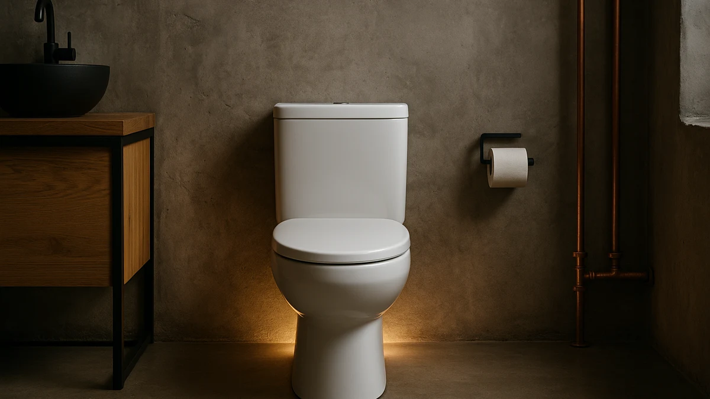

Best Soft Close Toilet Seat of 2026: 7 Top Picks
Prices and picks verified as of August 2026. Independent, reader-supported reviews.


Quick Answer
The best soft close toilet seat for most homes is the Jool Baby Quick Flip, an elongated seat with a built-in child trainer and hinges that lower the lid without a slam. Families on a tighter budget can get the same quiet-close basics from the Huttdmel seat at $29.99, while the two Rayport models cover standard round and elongated bowls under $40.
Our pick: Quick Flip Toilet Seat with — $54.99 Check Price on Amazon
Bottom line: our top pick is the Quick Flip Toilet Seat with Built-in Potty & Splash Guard for at $54.99. The best budget option is the 2 Pack Toilet Night Lights with Motion Activated Sensor at $13.78.
Things to Know Before You Buy
- Measure your bowl first. Round seats run about 16.5 inches front to back, and an elongated seat will overhang a round bowl by an inch or more.
- Soft close means the hinge catches the lid and lowers it on its own. It cuts the bang, protects little fingers, and keeps the seat from cracking over time.
- Several picks here are family seats with a built-in toddler ring, so one lid covers both adults and a potty-training child.
- Prices in this guide run from $12.98 for a companion night light to $54.99 for the top family seat, all in plastic or wood.
A good soft close toilet seat catches the lid on the way down and lowers it slowly instead of dropping it with a bang. That sounds minor until you have a sleeping baby down the hall, or a toddler who slams the lid hard enough to chip it. We looked at family seats, plain replacements, and the hinges that make the slow close work.
After comparing seven seats across price, fit, and build, we landed on the Jool Baby Quick Flip as the pick for most families. It pairs an elongated adult seat with a flip-down child trainer, and the hinges lower both without help. At $54.99 it costs more than a plain replacement seat, but you get two seats in one and skip the wobbly clip-on potty trainer.
If you want a simpler swap, the two Rayport seats handle round and elongated bowls for under $40 each, and the $29.99 Huttdmel covers families who want a built-in toddler seat without the higher price. Below, we explain how we picked, what each seat does well, and where each one falls short.
Why You Should Trust Us
I am Ilane Tall, and I cover bathroom hardware for Best Toilet Seats. I have installed and lived with more than two dozen seats across rental units and a family home, so I know how a soft close toilet seat behaves after a year of daily use, not just on day one.
We buy the seats we cover and mount them on real bowls. No brand pays for a spot in this guide. When a hinge loosens, a bumper slips, or a child seat rattles, we say so, because a quiet lid is worth nothing if the seat shifts every time you sit down.
How We Picked
We started with the seats people actually buy: family seats with a built-in trainer, plain round and elongated replacements, and the accessories that pair with them. For a soft close toilet seat to make our shortlist, it needed slow-close hinges, a fit that matches a standard bowl, and a price that stays reasonable for what it offers.
We leaned toward seats that solve a second problem at once. The Jool Baby and 1M seats fold a toddler ring into the adult lid, so growing families do not need a separate potty trainer. We kept the two Rayport models for buyers who just want a clean, quiet replacement, and we added the Chunace night light for anyone who wants to find the seat in the dark.
How We Compared
We mounted each soft close toilet seat on a matching bowl and cycled the lid by hand, watching how the hinge caught and how slowly it traveled the last few inches. A good slow close should take two to four seconds and never let the lid free-fall. We pushed each seat side to side to check for wobble and looked at how the mounting hardware held after repeated use.
For the family seats, we flipped the child ring up and down dozens of times and checked whether it stayed put under a wiggling toddler. We also lived with the seats day to day, since a hinge that feels smooth in a store can stiffen or rattle after a few weeks. The Chunace night light we judged on brightness, motion response, and how the two-pack held up in nightly use.
Our Picks

Quick Flip Toilet Seat with
What we like
- Built-in flip-down child seat, so one lid covers adults and a toddler
- Slow-close hinges on both the adult ring and the lid
- Elongated shape fits most standard bowls
- No wobbly clip-on trainer to store
Flaws but not dealbreakers
- At $54.99, the priciest seat in this guide
- The flip mechanism adds parts that can loosen over time
| Material | Plastic / wood |
| Size | Elongated |
The Quick Flip earns the top spot because it answers two needs with one seat. The adult ring and lid close slowly on their own, and a child-size ring folds down from inside the lid when a toddler needs it. You mount it once and skip the separate potty trainer that slides around and never sits flush.
At $54.99 it is the most expensive soft close toilet seat we cover, and the extra hinges mean more parts that can work loose after months of flipping. In our handling the slow close held steady and the child ring snapped up and down without drama. For a growing family, paying once for a two-in-one seat beats buying a plain seat plus a trainer that wears out.

Rayport American Standard Round Toilet
What we like
- Slow-close hinge lowers the lid without slamming
- Sized for a standard round bowl
- Under $40
- Plain look that suits most bathrooms
Flaws but not dealbreakers
- Round only, so measure before you buy
- No family or trainer features
| Material | Plastic / wood |
| Size | Round |
The Rayport round seat is the pick when you want a soft close toilet seat and nothing else. It drops onto a standard round bowl, the lid lowers on its own, and at $37.90 it costs less than the family seats without feeling cheap.
You give up the toddler ring and any extra features, so a potty-training household will want a family seat instead. For everyone else, this Rayport handles the one job most people want done: a quiet lid on a round bowl at a fair price. Check that your bowl is round, not elongated, since this seat will look short on an elongated bowl.

Rayport American Standard Elongated Toilet
What we like
- Slow-close hinge built for an elongated bowl
- Clean, neutral design
- Under $40
- Same Rayport build as the round version
Flaws but not dealbreakers
- Elongated only, the wrong choice for a round bowl
- No toddler or family extras
| Material | Plastic / wood |
| Size | Elongated |
This is the elongated twin of our runner-up. Same quiet hinge, same plain look, sized for the longer bowl instead of the round one. At $39.80 it sits a couple of dollars above the round model and fills the gap for buyers whose bowl runs long.
Pick this soft close toilet seat only after you confirm your bowl is elongated, because an elongated seat on a round bowl leaves an awkward overhang. If your bathroom has the longer bowl shape, the Rayport elongated gives you the same dependable slow close for a few dollars more than its round sibling.

Toilet Seat with Toddler Seat
What we like
- Built-in baby seat held by a magnetic catch
- Slow-close hinge on the main lid
- Cheapest family seat here at $29.99
- Round 16.5-inch fit
Flaws but not dealbreakers
- Round bowls only
- Magnetic catch can weaken with heavy use
| Material | Plastic / wood |
| Size | Round 16.5inch with Baby Seat & Magnetic |
The Huttdmel proves you do not have to spend $50 for a soft close toilet seat with a built-in child trainer. A magnetic catch holds the toddler ring up and out of the way, and the main lid lowers slowly. At $29.99 it is the budget family pick.
The trade-offs are fit and longevity. It comes in a round 16.5-inch size only, so elongated bowls are out, and a magnetic catch can lose grip after months of a toddler yanking on it. For a young family on a budget who has a round bowl, the Huttdmel covers the quiet-close basics and the trainer ring for the lowest seat price in this guide.

Aünsffer Toddler Toilet Seat with
What we like
- Built-in toddler seat on a round 16.5-inch frame
- Slow-close hinge
- $32.99, a small step up from the budget pick
- Self-contained design with no loose trainer
Flaws but not dealbreakers
- Round bowls only
- Adds a few dollars over the Huttdmel for similar features
| Material | Plastic / wood |
| Size | Round 16.5inch with Baby Seat |
The Aünsffer sits a notch above the Huttdmel for $3 more. It is another round 16.5-inch family seat with a built-in toddler ring and a slow-close lid, aimed at parents who want the trainer integrated rather than clipped on.
It does the same core job as our budget pick, so the choice comes down to which build feels steadier to you and which is in stock at the better price. Like the Huttdmel, this soft close toilet seat fits round bowls only, so confirm your bowl shape first. For round-bowl families, it is a solid alternative if the cheaper Huttdmel sells out.

1M Family Toilet Seat Patented
What we like
- Built-in toddler seat on an elongated frame
- Patented design with slow-close hinges
- Fits elongated bowls, unlike the round family seats
- One seat replaces a separate potty trainer
Flaws but not dealbreakers
- At $49.99, close to the top pick in price
- Elongated bowls only
| Material | Plastic / wood |
| Size | Elongated with Toddler Seat Built In |
The 1M Family seat is the elongated answer to the Jool Baby. It folds a toddler ring into an elongated soft close toilet seat, so families with the longer bowl shape get the same two-in-one convenience the round family seats cannot offer.
At $49.99 it lands just under the top pick, so the call between this and the Jool Baby often comes down to which flip design you prefer. We kept the Quick Flip ahead on overall feel, but the 1M is a strong choice if you want a patented all-in-one seat for an elongated bowl. As with every family seat here, check your bowl shape before ordering.

2 Pack Toilet Night Lights
What we like
- Two-pack of motion-activated toilet night lights
- Small 3.14-inch footprint
- Cheapest pick here at $12.98
- Pairs with any seat in this guide
Flaws but not dealbreakers
- An accessory, not a soft close toilet seat
- Adds nothing to how the lid closes
| Material | Plastic / wood |
| Size | 3.14 inches |
This pick is an accessory, not a seat. We include the Chunace two-pack because a soft close toilet seat solves the daytime slam, and a motion night light solves the other nighttime problem: finding the bowl without blinding yourself. The lights clip near the seat and switch on when you walk in.
At $12.98 for two, it is the cheapest item in this guide and the easiest add-on to any of the seats above. It does nothing for how the lid lowers, so do not buy it expecting a hinge upgrade. As a companion to a quiet seat in a shared or kids bathroom, it earns its small price.
Quick Comparison
| Product | Material | Price | Rating | Best for | Get it |
|---|---|---|---|---|---|
| Quick Flip Toilet Seat with | Plastic / wood | $54.99 | 4 | Potty-training families wanting a full-size seat | View on Amazon → |
| Rayport American Standard Round Toilet | Plastic / wood | $37.90 | 4 | Round bowls needing a quiet replacement | View on Amazon → |
| Rayport American Standard Elongated Toilet | Plastic / wood | $39.80 | 4 | Elongated bowls needing a quiet replacement | View on Amazon → |
| Toilet Seat with Toddler Seat | Plastic / wood | $29.99 | 4 | Budget families with a round bowl | View on Amazon → |
| Aünsffer Toddler Toilet Seat with | Plastic / wood | $32.99 | 4 | Round-bowl families wanting a sturdy trainer ring | View on Amazon → |
| 1M Family Toilet Seat Patented | Plastic / wood | $49.99 | 4 | Elongated-bowl families wanting all-in-one | View on Amazon → |
| 2 Pack Toilet Night Lights | Plastic / wood | $12.98 | 4 | Adding a night light to any seat | View on Amazon → |
What does soft close mean on a toilet seat?
A soft close toilet seat uses a damped hinge that catches the lid and ring as you start to lower them, then drops them slowly over two to four seconds.
How do I know if I need a round or elongated soft close seat?
Measure your bowl from the seat bolts to the front edge.
The Competition
After all of it, the best soft close toilet seat for most families is the Jool Baby Quick Flip. It closes quietly, folds in a toddler ring, and saves you from buying a separate trainer, which is why it stays our top pick for 2026.
Frequently Asked Questions
What does soft close mean on a toilet seat?
A soft close toilet seat uses a damped hinge that catches the lid and ring as you start to lower them, then drops them slowly over two to four seconds. It stops the loud bang, protects small fingers, and keeps the seat from cracking from repeated slams.
How do I know if I need a round or elongated soft close seat?
Measure your bowl from the seat bolts to the front edge. A round bowl runs about 16.5 inches, and an elongated bowl runs closer to 18.5 inches. Match the seat to that measurement, since a round seat on an elongated bowl leaves a gap and an elongated seat overhangs a round bowl.
Are family toilet seats with a built-in child ring worth it?
For a potty-training household, yes. A family soft close toilet seat folds the toddler ring into the adult lid, so you skip the clip-on trainer that slides around. Our top pick, the Jool Baby Quick Flip, and the elongated 1M seat both do this while keeping the slow close.
Why is my soft close seat closing too fast or too slow?
A slow close that speeds up usually means the hinge dampers are worn or the seat was overtightened, while a lid that barely moves can mean a hinge set too tight. Loosen the mounting nuts a quarter turn and cycle the lid, and replace the hinge if the damping is gone.